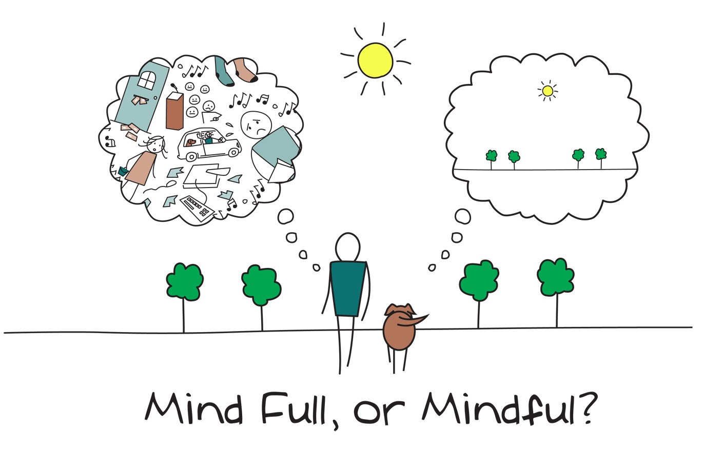

Mindfulness conversation
I did a 'mindfulness conversation' with a friend. She went first and had 3 minutes to talk. I noticed how much I wanted to interrupt or say my two cents, and what an effort it was for me to just nod and agree or acknowledge without contributing, it made me realise how much I butt in on people talking! When it came my turn, I found the 3 minutes went by really quickly, especially as we were discussing meditation at the time and I am quite into the subject. The whole process has definitely made me think more about how I listen to others, and really absorb what they are saying.
Techniques to sustain mindfulness
Of the three suggested practices in 'Search Inside Yourself', the one that appeals to me the most is the 'one breath a day', as I think starting small and setting acheivable goals is a great way to get a pratice like this going without getting bored or feeling 'obligated'. I also like the concept of 'doing less that you can', as it is a surefire way to feel like you are succeeding!
Other musings
I like the way this book is written, with real world examples, and in a way that makes mindful meditation less daunting and something that anyone can do and get good at. Comparing it to physical exercise makes so much sense as it is something that with practise, just like exercise, you will get better and better at.